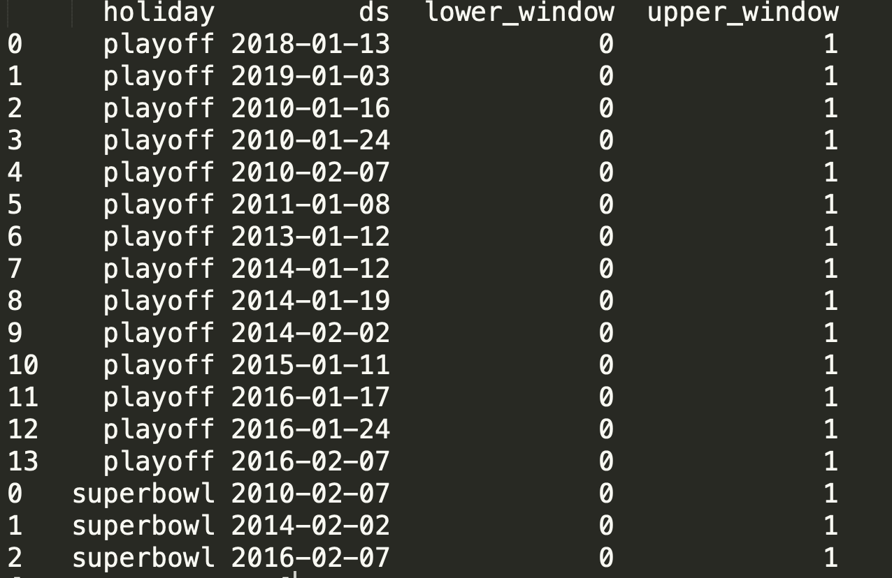

Seasonality, Holiday Effects, And Regressors¶
1.假期和特殊事件建模¶
1.1 假期和特殊事件建模¶
如果一个需要建模的时间序列中存在假期或其他重要的事件，则必须为这些特殊事件创建单独的 DataFrame。Dataframe 的格式如下：
DataFrame
holiday
ds
lower_window
upper_window
prior_scale
1.创建一个 DataFrame，其中包括了 Peyton Manning 所有季后赛出场的日期：
# data
df = pd.read_csv("./data/example_wp_log_peyton_manning.csv")
# 季后赛
playoffs = pd.DataFrame({
"holiday": "playoff",
"ds": pd.to_datetime(["2018-01-13", "2019-01-03", "2010-01-16",
"2010-01-24", "2010-02-07", "2011-01-08",
"2013-01-12", "2014-01-12", "2014-01-19",
"2014-02-02", "2015-01-11", "2016-01-17",
"2016-01-24", "2016-02-07"]),
"lower_window": 0,
"upper_window": 1
})
# 超级碗比赛
superbowls = pd.DataFrame({
"holiday": "superbowl",
"ds": pd.to_datetime(["2010-02-07", "2014-02-02", "2016-02-07"]),
"lower_window": 0,
"upper_window": 1
})
# 所有的特殊比赛
holiday = pd.concat([playoffs, superbowls])
print(holiday)

2.通过使用 holidays 参数传递节假日影响因素
from fbprophet import Prophet
m = Prophet(holidays = holidays)
m.fit(df)
future = m.make_future_dataframe(periods = 365)
forecast = m.predict(future)
forecast[(forecast["playoff"] + forecast["superbowl"]).abs() > 0][["ds", "playoff", "superbowl"]][-10:]
时间序列组件可视化：
prophet_plot_components(m, forecast)
plot_forecast_components(m, forecast, "superbowl")
1.2 指定内置的国家/地区假期(Build-in Country Holiday)¶
通过在
fbprophet.Prophet()中的holidays参数指定任何假期通过使用
.add_country_holidays()方法使用fbprophet.Prophet()内置的country_name参数特定该国家/地方的主要假期
# 模型-指定假期
m = Prophet(holidays = holidays)
m.add_country_holidays(country_name = "US")
m.fit(df)
# 所有指定的假期
m.train_holiday_names
forecast = m.predict(future)
fig = m.plot_components(forecast)
2.季节性的傅里叶变换(Fourier Order for Seasonalities)¶
使用偏傅里叶和(Partial Fourier Sum)估计季节性，逼近非定期信号
{kind=link}
from fbprophet.plot import plot_yearly
m = Prophet().fit(df)
a = plot_yearly(m)
通常季节性 yearly_seasonality
的默认值是比较合适的，但是当季节性需要适应更高频率的变化时，可以增加频率。但是增加频率后的序列不会太平滑。即可以在实例化模型时，可以为每个内置季节性指定傅里叶级别
from fbprophet.plot import plot_yearly
m = Prophet(yearly_seasonality = 20).fit(df)
a = plot_yearly(m)
增加傅里叶项的数量可以使季节性适应更快的变化周期，但也可能导致过拟合：N 傅里叶项对应于用于建模循环的 2N 变量。
2.2 指定自定义季节性¶
如果时间序列长度超过两个周期，Prophet
将默认自适应每周、每年的季节性。它还适合时间序列的每日季节性，可以通过
add_seasonality 方法添加其他季节性, 比如：每月、每季度、每小时
m = Prophet(weekly_seasonality = False)
m.add_seasonality(name = "monthly", period = 30.5, fourier_order = 5)
forecast = m.fit(df).predict(future)
fig = m.plot_components(forecast)